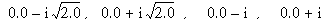

The FZ_ROOTS function is used to find the roots of an m -degree complex polynomial, using Laguerre’s method.
FZ_ROOTS is based on the routine zroots described in section 9.5 of Numerical Recipes in C: The Art of Scientific Computing (Second Edition), published by Cambridge University Press, and is used by permission.
Result = FZ_ROOTS( C [, / DOUBLE ] [, EPS = value ] [, / NO_POLISH ] )
Returns an m -element complex vector containing the roots of an m -degree complex polynomial.
A vector of length m +1 containing the coefficients of the polynomial, in ascending order (see example). The type can be real or complex.
Set this keyword to force the computation to be done in double-precision arithmetic.
The desired fractional accuracy. The default value is 2.0 x 10 -6 .
Set this keyword to suppress the usual polishing of the roots by Laguerre’s method.
Example 1 : Real coefficients yielding real roots.
Find the roots of the polynomial:
P (x) = 6x 3 - 7x 2 - 9x - 2
The exact roots are -1/2, -1/3, 2.0.
coeffs = [-2.0, -9.0, -7.0, 6.0]
roots = FZ_ROOTS(coeffs)
PRINT, roots
IDL prints:
( -0.500000, 0.00000)( -0.333333, 0.00000)( 2.00000, 0.00000)
Example 2 : Real coefficients yielding complex roots.
Find the roots of the polynomial:
P (x) = x 4 + 3x 2 + 2
The exact roots are:

coeffs = [2.0, 0.0, 3.0, 0.0, 1.0]
roots = FZ_ROOTS(coeffs)
PRINT, roots
IDL Prints:
(0.00000, -1.41421)(0.00000, 1.41421)
(0.00000, -1.00000)(0.00000, 1.00000)
Example 3 : Real and complex coefficients yielding real and complex roots.
Find the roots of the polynomial:
P (x) = x 3 + (-4 - i4)x 2 + s (-3 + i4)x + (18 + i24)
The exact roots are –2.0, 3.0, (3.0 + i 4.0)
coeffs = [COMPLEX(18,24), COMPLEX(-3,4), COMPLEX(-4,-4), 1.0]
roots = FZ_ROOTS(coeffs)
PRINT, roots
IDL Prints:
( -2.00000, 0.00000) ( 3.00000, 0.00000) ( 3.00000, 4.00000)
|
4.0 |
Introduced |